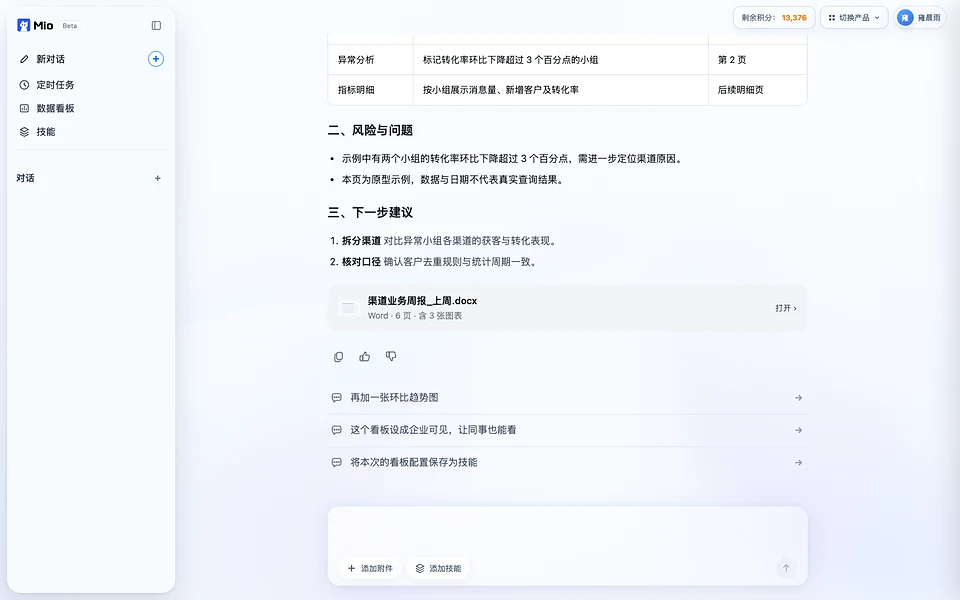
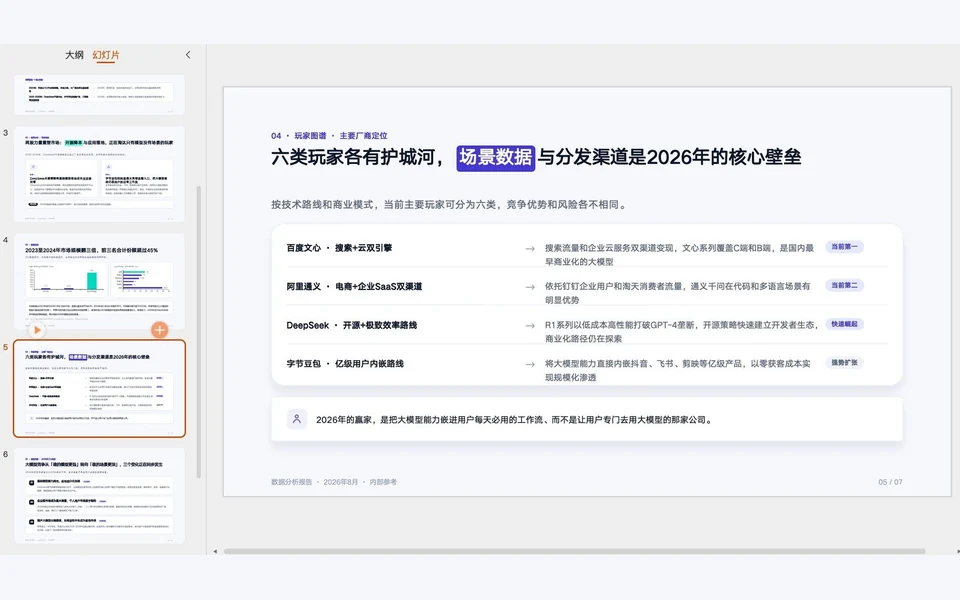
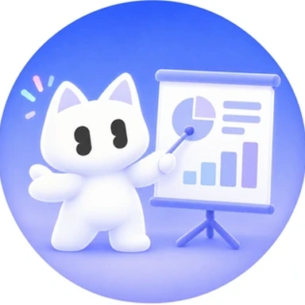
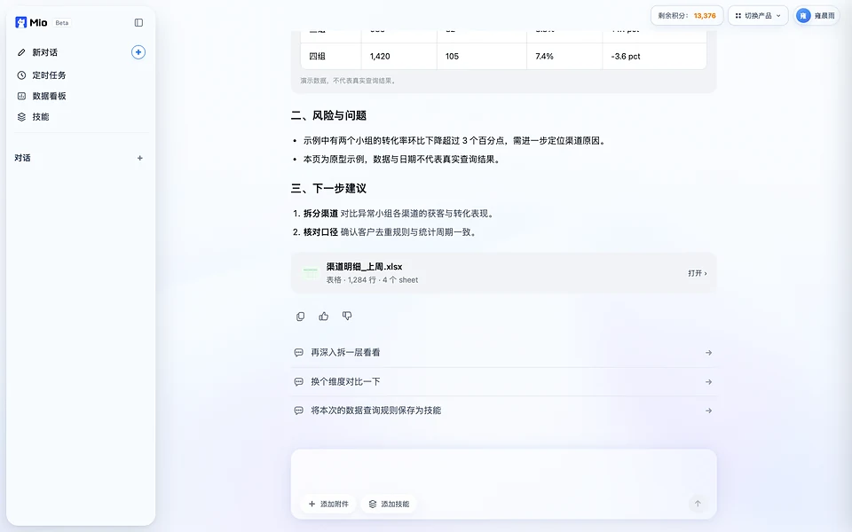
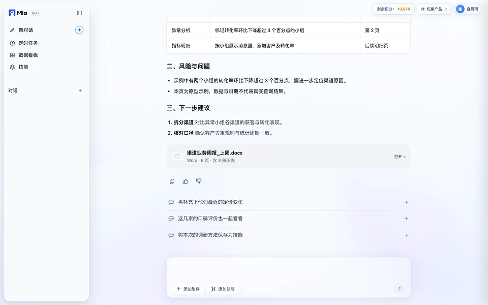
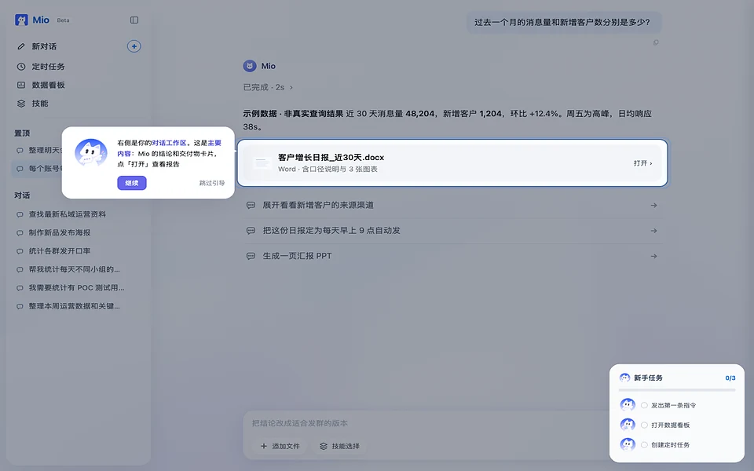
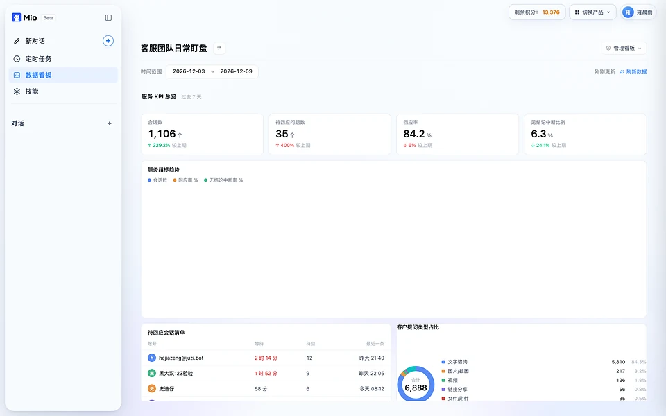
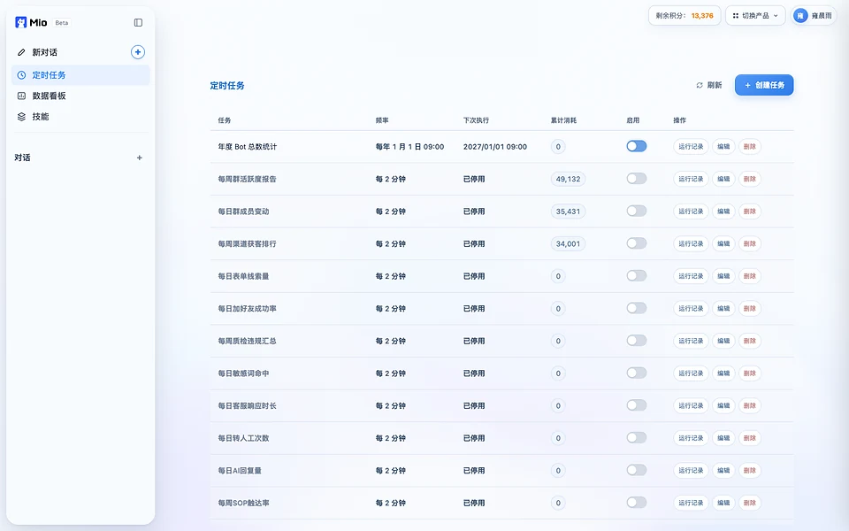
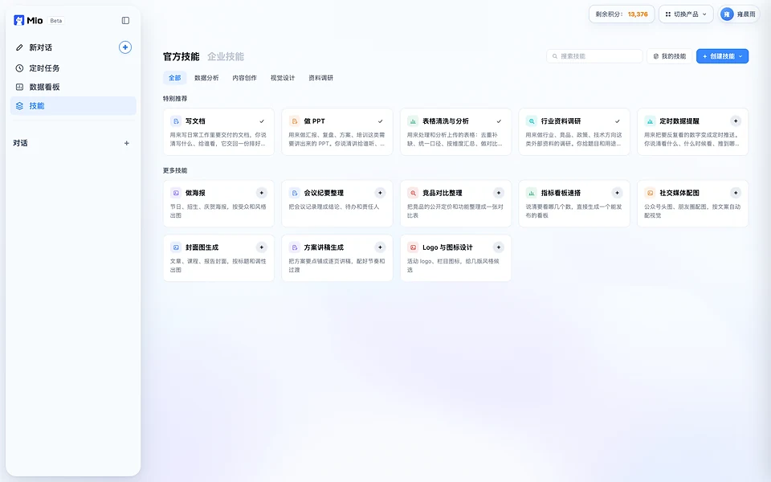

替每个员工干的七件事。
前四件是办公 AI 的基本功。后三件是企业用得最重的活：问数、看板和盯指标，接着企业的数才干得了。

写方案、出文档
周报、总结、方案、通知，说清要什么就动笔，排好格式交回。


做 PPT、做海报
汇报 PPT、分析报告、活动海报，图表排版配好，直接能用。

处理数据、出分析
表格清洗、汇总、对比分析，表和图一起交。

查资料、做调研
要查的它自己去搜、去核，整理成能用的材料。

问企业自己的数
一句话问经营数据，秒级出图表。一层层追着问到底，答案带出处，查得到数据库里的原始数。

搭数据看板
想盯的指标，一句话搭成看板。指标卡加分天趋势，随时刷新，明细点得进去。

主动盯、定时干
指标异动它先发现先提醒。日报周报到点自己来，盯出来的问题追进去就能查。
AI 助手给答案，Mio 交成果。
不止于问答：听得懂任务，自己拆步骤、动手干，交回能直接验收的成果。下面是三类最常用的活。
一句话，交回排好版的成品
周报、总结、方案、通知，说清要什么就动笔。它自己查数、写作、排版，交回的是能直接转发的 Word 文档，不是一段还要你再整理的文字。
- 到点自动出每周一早上的周报，定一次，之后不用管。
- 格式一次定好改过的版式和口径，下次开口直接带上。
- 不满意一句话改改第二版不用从头讲。
本周全渠道新增线索 12,436 条，环比增长 8%，整体转化率 6.8%。抖音与小红书贡献六成线索，微信客服转化率最高。
| 渠道 | 线索量 | 转化率 | 环比 |
|---|---|---|---|
| 抖音 | 4,812 | 5.2% | +11% |
| 小红书 | 2,960 | 4.1% | +6% |
| 微信客服 | 2,205 | 12.4% | +3% |
汇报和海报，也是一句话的事
说个主题，出一份多页 PPT，图表和数据都填好；活动海报说清风格直接出图。别的工具给思路和草稿，Mio 把成稿也做完，你只需验收。
- 多页 PPT 整份出左栏是整份的页面列表，每一页都能改。
- 图表按真实数据画接着企业的数出图，不是占位图。
- 海报、邀请函说个主题就出风格、文案、排版一次成稿。
 产品界面 · 演示数据
产品界面 · 演示数据
 PPT · 海报 · 一次成稿
PPT · 海报 · 一次成稿
接着企业的数，才干得了的三件事
它不是把数据查一下就答：读你的库，复制进专属沙盒，写代码重算，答案带出处，每个数能追到哪张表。想盯的指标一句话搭成看板；指标异动它先发现、先提醒。
- 答案带出处查得到数据库里的原始数，不写 SQL、不约 BI。
- 看板一句话搭指标卡加分天趋势，时间范围自己选，明细点得进去。
- 异动主动来找你日报周报到点自己来，盯出来的问题追进去就能查。
 产品界面 · 演示数据
产品界面 · 演示数据

客户已经在用 Mio 干的六件事。
都是客户拿自己的数据布置的活，不是演示。客户名已隐去。
助教点评统计与学员学情月报
课程运营与账号巡检
AI 上线前后效果对比
AI 用量对账：处理了多少消息、服务了多少人
社群运营日报与好评素材
标书审核 Skill
不是聊天框，是一个干活的过程。
布置下去之后，中间每一步它自己跑，你看得见、随时叫停。
听懂任务
一句话布置。不用学指令，不用写提示词。
自己拆步骤
把活拆成步骤，列出来给你看，先干什么后干什么。
动手执行
查数、检索、写作、制表、画图，一步步自己干。
交回成果
文档、PPT、表格，能下载能转发。不满意，一句话让它改。
干顺的活做成 Skill，全公司拿来就用。
模型不缺聪明，缺的是你们公司的做法。Mio 记得你说过的话；干顺的活能存成 Skill，别人一句话就能调用。
说过的话，不用再交代
用得越久，它越像你们公司的人。
- 口径和格式记得住：定过的指标口径、改过的版式，下次开口直接带上
- 改第二版不用从头讲：怎么来的、你改了什么，都有底
- 接过的数据源记得住：常问的表、常盯的指标，下次直接问

把一次干对的活写下来
Skill 不是一段代码，是这件活该怎么干。谁把活干顺了，他的做法就能存成 Skill，别人一句话调用，天天照着跑。
- Skill 库里有现成的：写周报、做 PPT、审标书这类，注册就能用
- 自家的做法做成自家的 Skill：审核规则、汇报格式、行业干法，固化下来
- 交付团队帮你做：复杂的活，交付团队把方法搭成 Skill，直接交给你用
企业的数据分三种，都接得进来。
接的不是一份导出来的表，是企业每天在产生的数据。授权一次，在给你的专属环境里读，答案带出处。
文档数据
飞书、钉钉等办公平台里的文档、表格、知识库。
系统数据
OA、CRM、ERP、订单库这些业务系统里的数。
AI 员工产生的数据
句子秒回里 AI 员工每天接的对话、线索、订单。
企业敢全员配，靠这六条。
员工各用各的 AI，好用法攒不下，公司材料还往外网跑。企业统一配 Mio，先问的不是聪不聪明，是可不可控。
统一开通，用量看得见
账号由企业统一开通；谁在用、用了多少，后台一目了然。
数据不出企业的域
授权一次，只在给你的专属环境里用；支持私有化、一体机部署。
每一次产出可追溯
答案来自哪些数据、怎么来的，全程可审计。金融、政务按这条验收。
在隔离沙盒里干活
动作可控、可回滚，碰不到不该碰的系统。
用真实工位身份上岗
账号、权限、行为记录，和员工同一套体系管理。
模型不绑定
100+ 国内外主流模型一键切换；按任务选模型，不被绑死。
注册就能用，用出感觉再全员开。
按账号开通，一个账号对应一名员工，人员变动可换绑。先自己试，再给一个部门开，最后全员配上。
给一个部门开
先跑一个月，接上这个部门的数据，看看大家离不离得开。
全员开通，做成 Skill
批量开通、接业务系统；交付团队把自家的活做成 Skill，留给下一个人直接用。